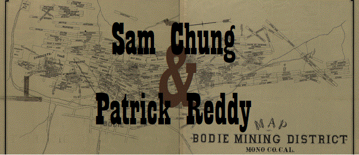

The year is 1883. High up in California’s Sierra Nevada mountains, an impossible crime rocks the bustling, bare-knuckle mining town of Bodie to its core. Local badman Sam Chung and his one-armed lawyer Patrick Reddy must join forces to explain the inexplicable before Chung is found guilty of a crime that – for once – he didn’t commit.
Told through Caleb Carver’s lively letters and books, the adventures of Sam Chung and Patrick Reddy still stand as some of the most entertaining mysteries ever put to paper.